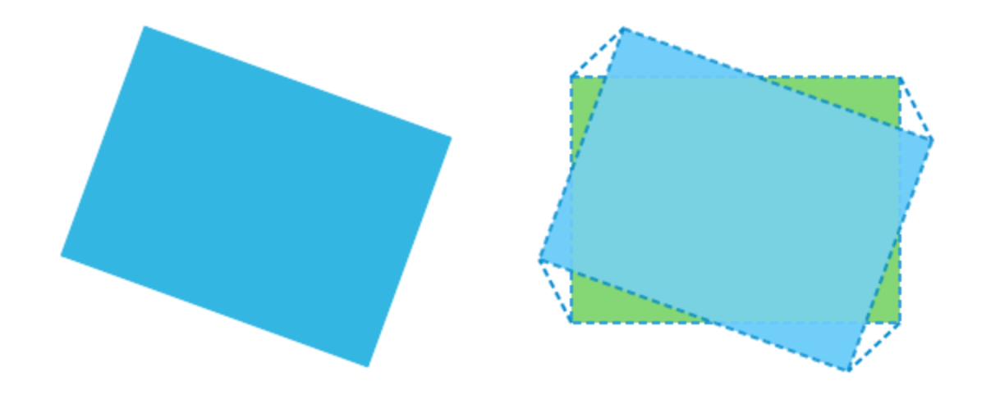
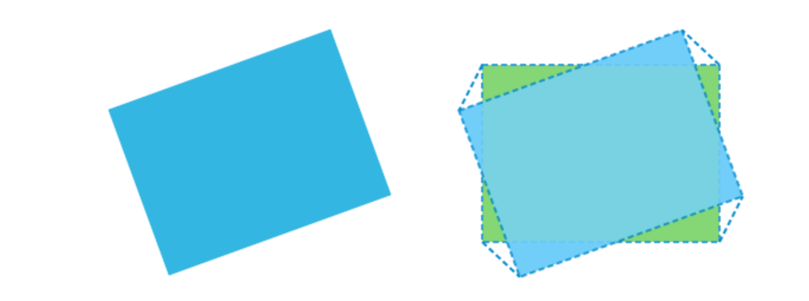
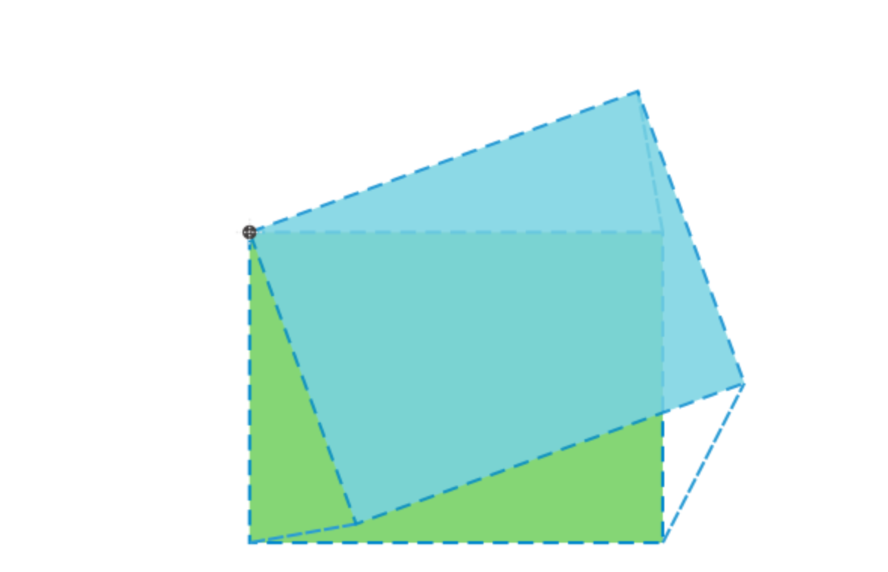

Rotirea elementelor HTML se poate obţine cu funcţia CSS cu numele rotate():
rotate(degrees)
Parametrul degrees se referă la unghiul de rotire şi se exprimă prin folosirea unităţii deg (grade).
Exemplul care ilustrează rotirea unui element div este următorul:
#transformed {
transform: rotate(20deg);
}
Efectul pe care îl are transformarea definită se poate vedea în imaginea de mai jos
În imaginea de mai sus este prezentat elementul div pe care este aplicată transformarea rotirii. În dreapta imaginii de mai sus este prezentat elementul div în raport cu poziţia sa iniţială.
Rotirea elementelor HTML cu funcţia rotate() se efectuează implicit în direcţia acelor de ceasornic. Dacă trebuie să obţinem rotirea în direcţia inversă, este suficient să definim valoarea negativă a unghiului:
#transformed {
transform: rotate(-20deg);
}
Efectul codului prezentat este ca în imaginea de mai jos
Ceea ce se poate observa în imaginile de mai sus este că transformarea rotirii are loc în raport cu centrul elementului care se transformă. Caracteristicile unui astfel punct de referinţă, în raport cu care se efectuează transformările, se pot influenţa folosind proprietatea transform-origin.
Proprietatea transform-origin se poate folosi pentru a seta punctul de referinţă al efectuării transformărilor. Valoarea implicită a acestei proprietăţi este:
transform-origin: 50% 50% 0;
Valoarea implicită defineşte punctul de referinţă al transformării, în centrul elementului, folosind valoarea de 50% pentru mutarea în raport cu coordonatele punctului de referinţă (care se află în colţul din stânga sus). Ultima valoare defineşte mutarea pe axa z, în caz că vor avea loc transformări tridimensionale,
Tocmai aţi văzut că proprietatea transform-origin poate accepta în total trei valori:
transform-origin: x-offset y-offset z-offset;
Pe lângă definirea tuturor celor trei valori, transform-origin poate fi specificată şi într-o formă cu două sau o singură valoare:
transform-origin: x-offset y-offset;
transform-origin: x-offset
Sintaxa impune următoarele reguli:
Pentru ca punctul de referinţă al efectuării transformărilor să se potrivească cu punctul iniţial al sistemului de coordonate al elementului, putem scrie următoarele:
transform-origin: 0px 0px;
În acest caz, rotirea se va efectua ca în imaginea de mai jos
